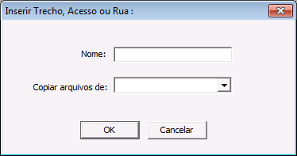

Adicionar novo Trecho ou Rua
Diálogo Inserir Trecho/Acesso ou Rua:
Como um projeto é uma coleção de trechos ou de ruas, cada projeto deve possuir pelo menos um trecho ou rua. Para inserir um novo trecho vá em Menu->Projeto->Inserir Trecho/Acesso ou Rua. O diálogo abaixo surgirá:

Campos:
Nome:
Digite neste campo o nome do trecho, acesso ou rua que deseja criar. Os arquivos referentes à este trecho ficarão logo abaixo do diretório onde o projeto foi criado. São permitidos apenas letras, números e os caracteres (_, &, -).
Copiar Arquivos De:
Como no mesmo projeto podem existir vários trechos ou ruas, muitos dos seus dados como por exemplo, taludes de corte, de aterro, taludes de pavimentação tipos de solos, entre outros, são iguais e precisariam de ser redigitados no trecho que esta sendo criado. Para evitar esta redigitação você poderá copiar estes arquivos de um trecho já existente. são os seguintes os arquivos copiados:
Cabeçalho
Limpeza do Terreno
Empolamentos
Altura de Pavimentação
Seções Tipo
Taludes de Aterro
Taludes de Corte
Seções Tipo de Pavimentação
Gradientes
Tipos de Solos
Edição de Acidentes Topográficos
Configuração das janelas
Para selecionar o trecho do qual deseja copiar os arquivo, pressione a seta para baixo e os trechos existentes deste projeto serão mostrados. Selecione com o mouse o trecho em questão. Caso haja alguma diferença em algum destes arquivos no trecho que está sendo criado você terá apenas que retocar os arquivos nos pontos onde haja diferenças.
Botões:
- OK:
Pressione este botão para criar o trecho confirmando os dados anteriores.
- Cancelar:
Este botão cancela a criação do trecho, fecha o diálogo e sai. O trecho não será criado.
Created with the Personal Edition of HelpNDoc: Easily create HTML Help documents